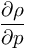

Vp-
directly incompresssible, implicit solver with penalty formulation
We describe the numerical scheme for incompressible / weakly compressible.
A document containing the scheme is found in DOCUMATH_GeneralNumericalScheme.pdf .
Compute all necessary material data. Especially see %ind_r%, %ind_ETA%, %ind_LAM%, %ind_MUE%, %ind_betaDarcy%, %ind_v0Darcy(1)% ... %ind_v0Darcy(3)%, %ind_SIG%, ...
![\begin{array}{*{35}{l}}
\rho & =\rho \left( t_{{}}^{n+1},p_{hyd}^{n}+p_{dyn}^{n},T_{{}}^{n},A_{v}^{n} \right) \\
\eta & =\eta \left( t_{{}}^{n+1},p_{hyd}^{n}+p_{dyn}^{n},T_{{}}^{n},A_{v}^{n} \right) \\
\lambda & =\lambda \left( t_{{}}^{n+1},p_{hyd}^{n}+p_{dyn}^{n},T_{{}}^{n},A_{v}^{n} \right) \\
\mu & =\mu \left( t_{{}}^{n+1},p_{hyd}^{n}+p_{dyn}^{n},T_{{}}^{n},A_{v}^{n} \right) \\
k_{D}^{{}} & =k_{D}^{{}}\left( t_{{}}^{n+1},p_{hyd}^{n}+p_{dyn}^{n},T_{{}}^{n},A_{v}^{n} \right) \\
... & {} \\
\end{array}](image/73873e14214e5f4f586158269c290b68.png) Also, compute derived data, for example:
the compressibility, see %ind_R_P%, also %ind_DiagPcorr%
Also, compute derived data, for example:
the compressibility, see %ind_R_P%, also %ind_DiagPcorr%
Compute the rediduals for the density. See %ind_r_residual%
integrate all additional variables defined by the CODI commands. See also %ind_addvar% ...
Include the latex text in brackets in the form \[ a^b \] , then the equation is rendered in the next line, it looks like \[ a^b \]
Include the latex text in dollar signs in the form \( a^b \), then the equation is rendered inline, it looks like \( a^b \).
The icon "#eqn" opens and the icon "eqn#" closes a LaTeX equation. Everything that is in between will be written into an image file included by the html-output.

Compute the rediduals for the velocity. See %ind_v_residual(1)% ... %ind_v_residual(3)% . Compute the rediduals for the density. See %ind_r_residual%
integrate all additional variables defined by the CODI commands. See also %ind_addvar% ...
!$FPMDOCU Bad equation style: a^b
Besides this, one is able to render latex equations in the mathjax-way: Include the latex text in brackets in the form \[ a^b \] , then the equation is rendered in the next line, it looks like \[ a^b \]
Include the latex text in dollar signs in the form \( a^b \), then the equation is rendered inline, it looks like \( a^b \).
The icon "#eqn" opens and the icon "eqn#" closes a LaTeX equation. Everything that is in between will be written into an image file included by the html-output.